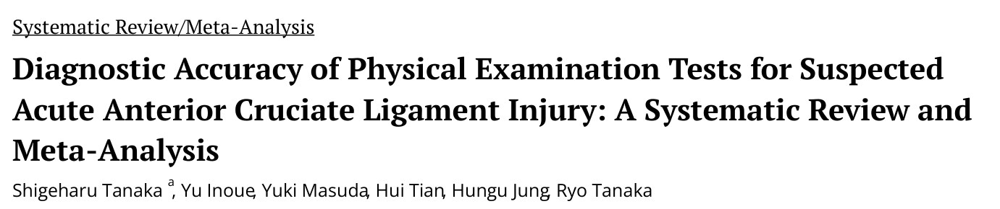
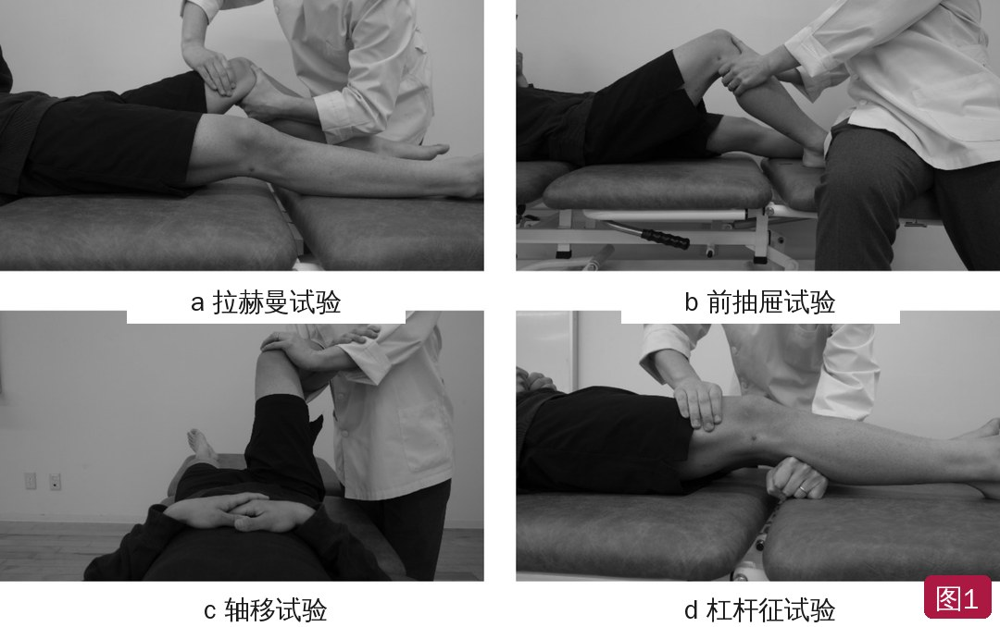
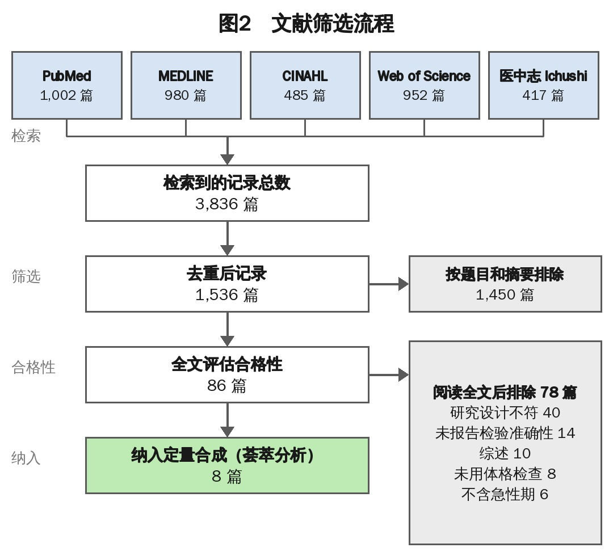
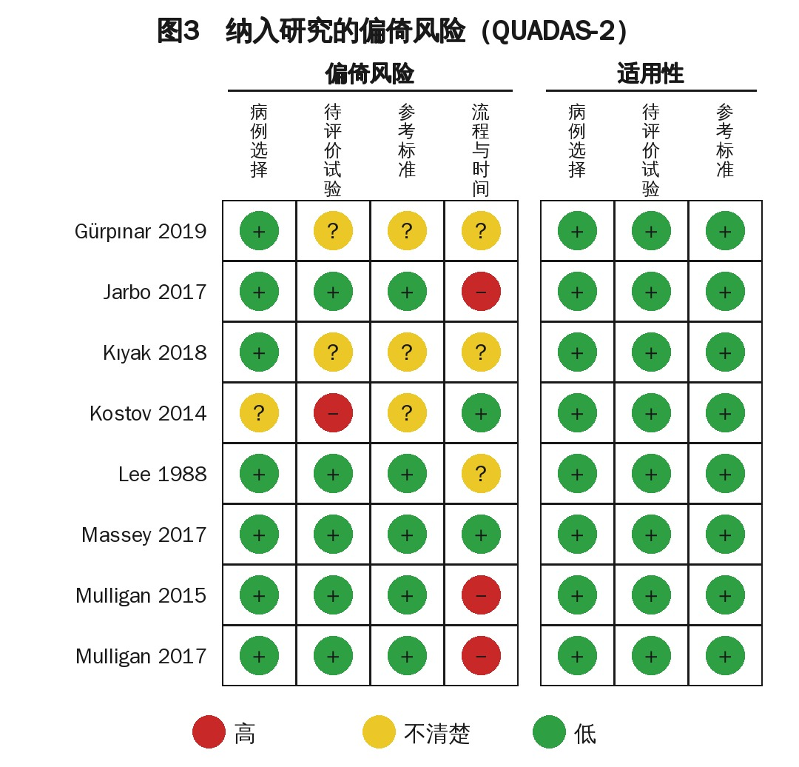
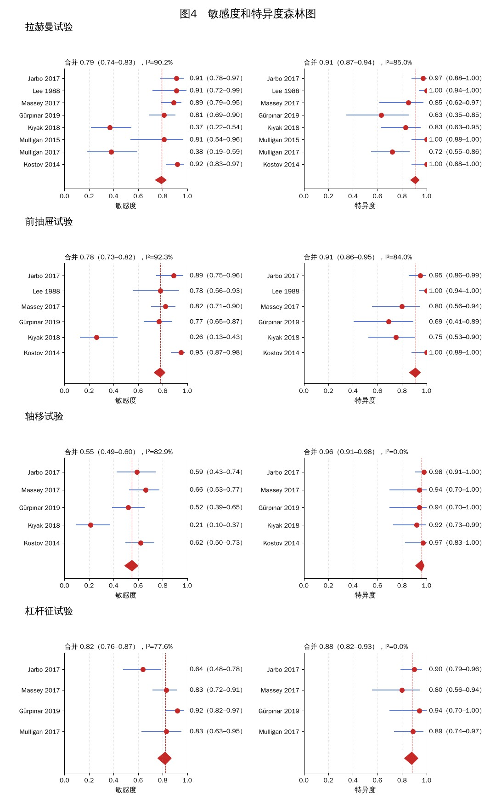
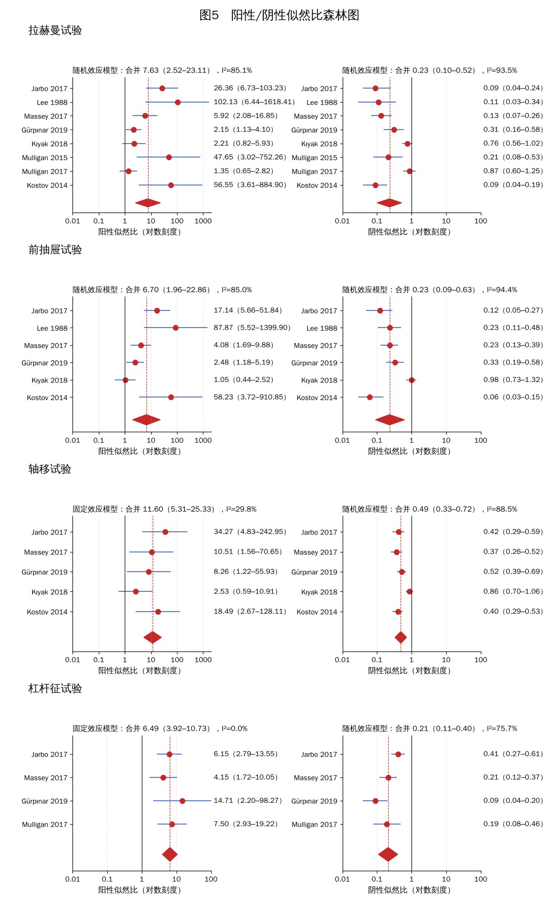
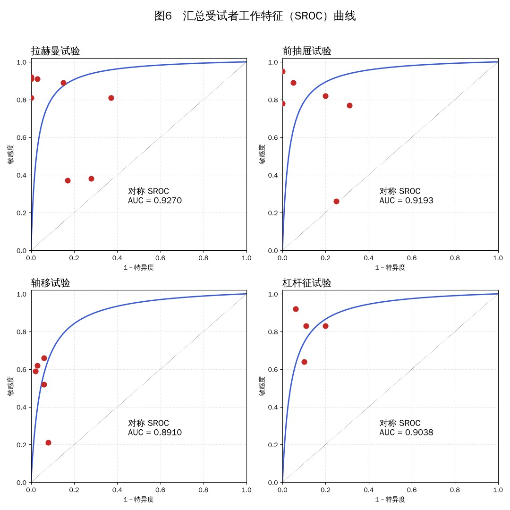

🔖原文首页（IJSPT 2022 年第 17 卷第 5 期）
📚 文献卡片
▪ 英文原题：Diagnostic Accuracy of Physical Examination Tests for Suspected Acute Anterior Cruciate Ligament Injury: A Systematic Review and Meta-Analysis（疑似急性前交叉韧带损伤体格检查的诊断准确性：系统综述与荟萃分析）
▪ 作者：Shigeharu Tanaka · Yu Inoue · Yuki Masuda · Hui Tian · Hungu Jung · Ryo Tanaka
▪ 机构：神奈川县立保健福祉大学康复学院物理治疗学科（日本）等
▪ 期刊：International Journal of Sports Physical Therapy（IJSPT）
▪ 年卷期：2022;17(5):742-752
▪ PMCID：PMC9340834
▪ 文章类型：系统综述与荟萃分析
▪ 证据级别：2 级
▪ 注册号：UMIN000044766
▪ 关键词：anterior cruciate ligament injury · diagnostic test accuracy · physical examination test · systematic review
ACL 损伤多见于急停、变向、跳跃落地的青少年和年轻人。急性期疼痛、肿胀、关节积血，让诊断变得困难：英国两项研究中，急性期正确诊断率只有 28.2% 和 14.4%，确诊中位时间是伤后 6 周。延误诊断会推迟治疗，增加膝关节继发损伤的风险。
MRI 是金标准（LR+ 14.4，LR− 0.1），但体格检查便宜、不需要设备。常用的有 4 个：拉赫曼试验、前抽屉试验、轴移试验、杠杆征试验。以往的荟萃分析没有把急性期单独拿出来分析，也没有把杠杆征和另外三个放在一起比较。
本研究专门汇总伤后 6 周内（急性期）青少年和年轻人中这 4 个检查的诊断准确性。
| 检查 | 敏感度 | 特异度 | 阳性似然比 | 阴性似然比 | AUC |
|---|---|---|---|---|---|
| 拉赫曼试验 | 0.79 | 0.91 | 7.63 | 0.23 | 0.927 |
| 前抽屉试验 | 0.78 | 0.91 | 6.70 | 0.23 | 0.919 |
| 轴移试验 | 0.55 | 0.96 | 11.60 | 0.49 | 0.891 |
| 杠杆征试验 | 0.82 | 0.88 | 6.49 | 0.21 | 0.904 |
数值来自原文图 4～6 的合并估计；加粗为四项中最好者。似然比：LR+ >10、LR− <0.1 通常被视为强证据。
一句话概括：急性期想“确诊”看轴移试验（阳性最可靠），想“排除”看杠杆征试验（阴性最可靠）；四个检查的 AUC 都 >0.89，最好组合使用。
| 检查 | 做法 | 阳性 |
|---|---|---|
| 拉赫曼试验（a） | 仰卧，屈膝约 15°；一手固定股骨远端，一手握胫骨近端向前拉 | 患侧胫骨前移比健侧多 |
| 前抽屉试验（b） | 仰卧，屈膝 90°；检查者坐在患者足上，双手握胫骨近端，拇指触胫骨平台、示指触内外侧腘绳肌腱，向前拉 | 患侧胫骨前移比健侧多 |
| 轴移试验（c） | 检查者站在患侧，一臂抱住小腿屈膝 90°，另一手掌使胫骨内旋（外侧胫骨平台半脱位），保持内旋慢慢伸膝 | 接近完全伸直时胫骨平台复位，出现可听到或可触到的弹响 |
| 杠杆征试验（d） | 仰卧双腿伸直，检查者一拳放在小腿近端 1/3 下方，另一手在股四头肌远端 1/3 向下压 | 足跟不能抬起 |

🔖图1：四项体格检查——a 拉赫曼试验、b 前抽屉试验、c 轴移试验、d 杠杆征试验（检查名称已改为中文）
• 遵循 PRISMA-DTA（诊断准确性系统综述报告规范）
• 检索 PubMed、MEDLINE、CINAHL、Web of Science 和日本医学数据库医中志（Ichushi），英文和日文，最后检索日期 2021 年 4 月 23 日
• 纳入：前瞻性队列或横断面的单门研究，含急性期（伤后 6 周内）；能算出真阳性、真阴性、假阳性、假阴性；青少年和年轻人；部分或完全 ACL 损伤；以 MRI 和/或关节镜为参考标准
• 排除：膝关节手术史；合并骨关节炎、半月板损伤等；仅用问卷或仪器诊断；以“松弛”为诊断
• 两名评价者独立筛选，用 QUADAS-2 评估偏倚风险；用 Meta-Disc 1.4 合并；异质性显著（I² >50%）时用随机效应模型，否则用固定效应模型；AUC >0.70 视为有效
表1 检索策略
| # | 检索式 |
|---|---|
| 1 | "Anterior cruciate ligament"（前交叉韧带） |
| 2 | Injury（损伤） |
| 3 | Rupture（断裂） |
| 4 | Tear（撕裂） |
| 5 | #2 OR #3 OR #4 |
| 6 | "Lachman test"（拉赫曼试验） |
| 7 | "Pivot shift test"（轴移试验） |
| 8 | "Anterior drawer test"（前抽屉试验） |
| 9 | "Lever sign test"（杠杆征试验） |
| 10 | #6 OR #7 OR #8 OR #9 |
| 11 | #1 AND #5 AND #10 |
• 检索到 3,836 篇，去重后 1,536 篇，筛选题目摘要后 86 篇读全文，最终纳入 8 篇（图 2）
• 共 620 名受试者；6 篇由医生检查，2 篇由物理治疗师检查
• 拉赫曼试验 8 篇、前抽屉 6 篇、轴移 5 篇、杠杆征 4 篇

🔖图2：文献筛选流程（原图为英文，已按原内容中文重绘）
表2 纳入研究的特征
| 研究（年份） | 人数（男/女） | 年龄 均数（范围） | 检查者 | 麻醉 | 参考标准 | 检查：真阳性/真阴性 |
|---|---|---|---|---|---|---|
| Jarbo 2017 | 102（58/44） | 23（15～66） | 医生 | 29 人麻醉下 15 人清醒 | MRI | 拉赫曼 40/56 前抽屉 39/55 轴移 26/57 杠杆征 28/52 |
| Lee 1988 | 79（NA） | NA（14～59） | 医生 | NA | MRI | 拉赫曼 21/56 前抽屉 18/56 |
| Massey 2017 | 91（61/30） | 28（NA） | 医生 | 清醒 | MRI | 拉赫曼 63/17 前抽屉 58/16 轴移 44/15 杠杆征 59/16 |
| Gürpınar 2019 | 78（69/9） | 26（17～44） | 医生 | 清醒 | MRI | 拉赫曼 50/10 前抽屉 48/11 轴移 32/15 杠杆征 57/15 |
| Kıyak 2018 | 62（NA） | NA | 医生 | 清醒 | MRI | 拉赫曼 14/20 前抽屉 10/18 轴移 8/22 |
| Mulligan 2015 | 45（21/24） | 40（20～64） | 物理治疗师 | NA | MRI、关节镜 | 拉赫曼 13/29 |
| Mulligan 2017 | 60（38/22） | 42（18～65） | 物理治疗师 | NA | MRI、关节镜 | 拉赫曼 9/26 杠杆征 20/32 |
| Kostov 2014 | 103（81/22） | 29（16～58） | 医生 | NA | 关节镜 | 拉赫曼 67/30 前抽屉 69/30 轴移 45/29 |
NA：未报告；MRI：磁共振成像。
• 病例选择：1 篇不清楚（未说明是否连续入组）
• 待评价试验：1 篇高风险（未说明判读时是否不知道参考标准结果，阳性标准也不清楚）
• 流程与时间：3 篇高风险（没有评估待评价试验与参考标准之间的时间间隔）
• 三个领域的适用性均为低风险

🔖图3：纳入研究的偏倚风险汇总（QUADAS-2，原图为英文，已中文重绘）

🔖图4：四项检查的敏感度和特异度森林图（按原图数据中文重绘；红色菱形为合并估计）
• 合并敏感度：拉赫曼 0.79（0.74～0.83）、前抽屉 0.78（0.73～0.82）、轴移 0.55（0.49～0.60）、杠杆征 0.82（0.76～0.87）
• 合并特异度：拉赫曼 0.91（0.87～0.94）、前抽屉 0.91（0.86～0.95）、轴移 0.96（0.91～0.98）、杠杆征 0.88（0.82～0.93）
• 敏感度的异质性都很大（I² 77.6%～92.3%）；轴移和杠杆征的特异度异质性为 0

🔖图5：四项检查的阳性和阴性似然比森林图（对数刻度，按原图数据中文重绘）
• 阳性似然比：拉赫曼 7.63、前抽屉 6.70、轴移 11.60（最高）、杠杆征 6.49
• 阴性似然比：拉赫曼 0.23、前抽屉 0.23、轴移 0.49、杠杆征 0.21（最低）

🔖图6：四项检查的汇总受试者工作特征（SROC）曲线（按原文研究数据和 AUC 中文重绘）
四项检查的 AUC：拉赫曼 0.9270、前抽屉 0.9193、轴移 0.8910、杠杆征 0.9038，均 >0.70，诊断价值良好。
• 一般认为 LR+ >10 可以有力地确诊，LR− <0.1 可以有力地排除。据此作者认为：杠杆征试验适合排除，轴移试验适合确诊急性 ACL 损伤
• 与以往结果一致：2016 年系统综述中轴移试验特异度 97.5%、LR+ 16.00；Reiman 等的杠杆征 LR+ 9.2、LR− 0.58
• 单一体格检查难以完全确诊，组合使用这几个准确性较高的检查，有助于减少误诊
• 杠杆征是 2010 年代才提出的新检查：操作简单，需要的检查者力量较少，借助重力而非检查者的手感判断，可能更准确；Lichtenberg 等发现其检查者间一致性（kappa）在四项中最高
• 未检索常用的 EMBASE 数据库；只看急性期，仅纳入 8 篇
• 排除了合并半月板损伤和松弛的受试者，推广性受限
• 没有考虑麻醉的影响（麻醉下肌肉完全放松，可能提高准确性），且部分损伤和完全损伤混在一起
• 参考标准有 MRI 和关节镜两种，可能引入混合偏倚
• 亮点：首个专门针对急性期、并把杠杆征与另外三项放在一起比较的荟萃分析；方法按 PRISMA-DTA，预先注册，用 QUADAS-2 评估偏倚
• “排除”结论需要谨慎：杠杆征 LR− 0.21，并未达到作者自己引用的“<0.1 才算强证据”的标准，而且与拉赫曼（0.23）、前抽屉（0.23）相差很小、置信区间重叠；轴移 LR+ 11.60 达到了确诊标准
• 异质性大、研究少：敏感度 I² 多在 80%～90% 以上；每项检查只有 4～8 篇；各研究的阳性判定标准、检查者（医生/治疗师）和麻醉状态不一
• “急性期”界定不清：纳入标准是“包含急性期”的研究，但部分研究可能混有非急性期患者；表 2 中有的受试者年龄达 60 多岁，与“青少年和年轻人”的定位不完全相符
• 前后数字不一致：正文说 7 篇用 MRI、1 篇用关节镜、2 篇两者都用（合计 10 篇），实际 8 篇中按表 2 是 5 篇 MRI、1 篇关节镜、2 篇两者都用；麻醉状态“清醒 4、麻醉 1、不清楚 4”合计也是 9 篇；前抽屉敏感度置信区间正文写 0.73～0.83，图中为 0.73～0.82；图 3 把 Gürpınar 拼成 Grüpinar
• 结果呈现不全：表 2 只给了真阳性和真阴性，没有假阳性和假阴性，读者无法自行复算
① 四个检查都有用：AUC 0.89～0.93，特异度都在 0.88 以上
② 想确诊：轴移试验阳性最可靠（特异度 0.96、LR+ 11.6），但敏感度只有 0.55，阴性不能排除
③ 想排除：杠杆征阴性相对最可靠（敏感度 0.82、LR− 0.21），但和拉赫曼差别不大，仍未达强排除标准
④ 拉赫曼和前抽屉：表现相近且均衡（敏感度约 0.78、特异度 0.91）
⑤ 实践：组合检查，结合病史；结果不确定时 MRI 确认
⑥ 证据：只有 8 篇研究、异质性大，结论有待更多高质量研究验证
欢迎关注悦美力公众号，获取更多物理治疗的专业知识！
📄参考文献：
Tanaka S, Inoue Y, Masuda Y, Tian H, Jung H, Tanaka R. Diagnostic Accuracy of Physical Examination Tests for Suspected Acute Anterior Cruciate Ligament Injury: A Systematic Review and Meta-Analysis. Int J Sports Phys Ther. 2022;17(5):742-752. PMCID: PMC9340834.
图 1 照片来自原文（检查名称已改为中文）；图 2～6 按原文图表数据中文重绘；表 1～2 已译为中文，仅用于学术交流。